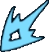

TMNT: Splintered Fate – Glossary
Adrenaline
+5% Physical damage dealt. Max of 5 stacks. Stacks are lost upon taking damage.
Blinding Light
Each stack reduces damage dealt by 4%
Darkness
Takes 32 Dark damage per second. Max of 1 stack.
Dark Shell
Constantly apply Daarkness to nearby enemies.
Granted by some Astral Dark Powers.
Electrified
Takes 15 Utrom damage per second. Max of 3 stacks.
Final Strike
The final hit of your basic 3 hit attack combo. Powers that use the Strike Slot

add damage and effects to this attack.Guard Break
+15% damage received.
Inferno
Takes 15 Flame damage per second. Max of 5 stacks.
Karai's Pauldron
Marks how many times you have defeated Karai.
Collect more to unlock new Dragon and Dreamer upgrades to purchase in the Home Lair.
Light Shell
Grants immunity to projectile attacks.
Granted by some Astral Light Powers and Leonardo Masteries.
Master Strike
Extra Physical damage on your Final Strike. Granted by Leonardo's Inspiration 1. Starts at 35 damage and can be upgraded to 50.
Several of Leonardo's Masteries increase this damage or add it to other attacks.
Ooze
Takes 11 Ooze damage per second for 5s. Max of 4 stacks.
This hits for 2 damage 5 times per second.
Pizza Slice
Restores 10 Health. Can be dropped from members of the Foot Clan after taking the Slice of Life upgrade
Pizza Slice (Large)
Restores 32 Health. Appears after you defeat a boss.
Scrap
Acquired from defeating Enemies, Bosses, Room Rewards and breaking crates. All Scrap is lot at the end of a run.
Scrap can be used to purchase items in the Chairman's Shop.
Shredder's Blades
Marks how many times you defeated Shredder.
Unlocks new powerful upgrades to purchase in the Home Lair.
Shuriken
Shuriken granted from Ninja Power uprades do 15 damage. However if you have one of the Shuriken tools, the shuriken from the upgrades will have the same damage amount/type of the current tool level. Ninja Powers like Quick Hands and Ricochet will also affect your shuriken tools.
Torrent
+5% Multi-Hit chance, per stack. Max of 5 stacks.
Granted by some Water Powers.